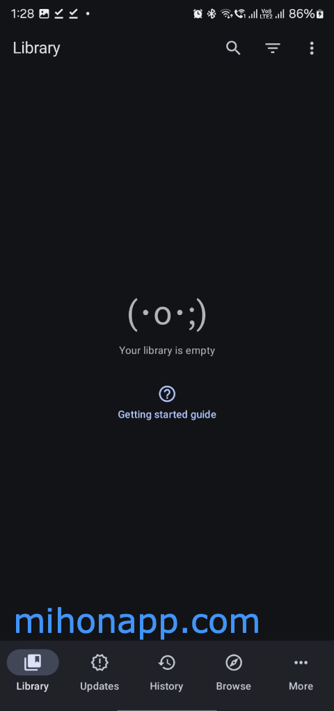

Mihon 长期使用报告：从 Tachiyomi 替身到我的漫画追更主力
装 Mihon 快一年了，从最初只是想找个替代码头，到现在书架里攒了四十多部漫画。说说哪些功能从别扭变成习惯，哪些当初看好的东西慢慢失望，以及沙漏图标为什么成了我每天点开的理由。
当初为什么装它
说白了就是 Tachiyomi 没了之后总得找个替补。社区里说 mihon官网 是 fork 过来的，核心代码基本没变，扩展系统也能兼容原来的 Keiyoushi 仓库。我当时没多想，安装包从mihon下载拿，装完加了 MangaDex 和 Batoto 两个扩展，把书架从备份恢复过来，就那么用着了。
那个阶段它对我来说就是个「能用的漫画阅读器」——能追更、能下载、书架能看，仅此而已。没觉得哪里特别好，也没觉得哪里不行。直到用了大半年之后才发现，这个「没什么特别的」恰恰是它最特别的地方。
哪点越用越顺手：智能更新救了我的电池
刚装上那会我跟大多数人一样，全局更新天天点，书架三十多部漫画每部都发一遍请求。后来发现不对——有些漫画明明半月刊，我两三天刷一次，每次都空跑；还有几部已经完结了的，也在傻刷。电池掉得快不说，偶尔还被 MangaDex 扔 Cloudflare 验证。
Mihon 的智能更新是我后来才慢慢摸明白的。它不是对所有漫画一视同仁地刷，而是有四条硬条件卡死：你至少得读过一章、这部漫画还没完结、书架上没有未读章节、而且距离上次更新的时间得够预测的更新周期。四条全满足才会发请求。
说个反直觉的：我一开始觉得这逻辑太保守了，万一某部漫画临时加更怎么办？实际用下来发现，真加更的话手动点一下详情页的刷新图标就搞定了，而平时省下来的那些空跑请求——按我书架里四十多部算——每天至少少发二三十个 HTTP 请求。电池和流量都能感觉到变化。
最妙的是那个沙漏图标。每部漫画的详情页或书架条目上都有个小沙漏，数字就是 Mihon 预测的更新周期。沙漏显示 7 就是一周更一次，显示 14 就是半月刊。我现在每天睡前扫一眼书架上哪些漫画的沙漏倒计时快到了，心里有数。

哪点越用越烦：扩展生态的不确定性
Mihon 本身是个空壳，所有漫画源都靠扩展。扩展是独立 APK，由社区开发者维护，装完还得手动点盾牌图标信任——这两步安全机制我理解，但问题出在扩展的维护状态上。
Keiyoushi 仓库上百个扩展，真正活跃维护的就那些头部的。我前前后后试过五六个源，Batoto 改了几次页面结构之后扩展停更了，Mangapark 也出过好几次抓取失败，最后稳定下来的还是 MangaDex 和 Toonily 这俩主力。扩展挂了就得等开发者修，修没修不知道，等了一周没动静就只能换源或者弃坑。
还有一个烦人的点：扩展装多了全局更新还是会慢。我虽然只装了四五个源，但 Mihon 每次启动全局更新还是要等个十几秒才开始真正发请求。我在mihon文档里看到装太多扩展会触发漫画源反爬，这我信，但「到底装多少算多」没个准数，只能自己试。
哪个功能成了每天离不开的：书架的筛选和徽章
书架是我每天打开 Mihon 第一个看的地方。网格视图按封面展示，长按时进多选模式。但真正让它好用的是筛选和徽章的组合。
书架顶部那个三条横线的筛选图标，我现在每天至少点三次。"只看正在读 + 有新章节"是我的日常筛选组合——一下子就能从四十多部里抓出需要处理的四五部。新章节徽章（封面角落的红点或数字）让我不用点开每部漫画就知道哪些刚更了。下载徽章显示已离线的章节数，出门前扫一眼就知道要不要先下好。
排序我用的是「最近阅读」，最近追的几部自然排前面。不过说实话排序方式对我来说都差不多，真正管用的还是筛选。条目多了不筛选直接翻书架，那叫一个乱。
哪个碰都没再碰：列表视图和手动拖动排序
列表视图是紧凑展示漫画标题、作者、源、章节数，空间利用效率高。我刚装上那会新鲜感切了两次，然后就再也没切回来过。网格视图看封面直观得多，漫画这种东西，扫一眼封面就知道是不是想追的，列表视图看不出这层感觉。
手动拖动排序也是。文档里说长按条目可以手动调顺序，我试了一下，手指在触摸屏上拖来拖去容易误触，而且四十多部手动排得累死。还是让 Mihon 按规则排更省心。
观感修正：高估了它的灵活度，低估了它的克制
刚装的时候我以为 Mihon 跟 Tachiyomi 一样是个「想怎么折腾就怎么折腾」的工具。用了一阵发现它其实挺克制的——很多参数都给了你，但默认值已经帮你调到了最合理的状态，你不动也能用得很好。
智能更新的四条规则我一开始想自己改优先级，找了半天发现 Mihon 根本不让你改。你要么开着智能筛选，要么关掉全局强制更新，没有中间态。我一开始觉得这是 bug，后来想通了——社区开发者给你的就是他们认为最优的方案，改来改去反而容易把自己搞到被漫画源限流。
反过来我低估了它的学习能力。沙漏图标不是固定值，Mihon 会根据你书架上实际观察到的更新时间慢慢调整预测。某部漫画从周更变成旬更，过一两周沙漏数字就从 7 变成了 10 或 14。这种静默的学习过程我一开始完全没注意到，是看了文档才反应过来。
去留结论：暂时不走，但有一个风险信号
Mihon 现在是我每天都开的应用——不是每天都读漫画，而是每天都点进去扫一眼书架，看有没有新章节、沙漏倒计时有没有归零。替换它的念头从它稳定运行三个月之后就没再出现过。
但有一个风险信号我在盯着：扩展生态的健康度。如果 Keiyoushi 仓库哪天停了，或者主力漫画源的扩展停更了，那我就得重新找替补。Tachiyomi 当年没了的时候我花了两三天迁移数据，再来一次也不是不行，但谁想折腾呢。
这套资料在三个仓库都能拿到
Mihon 的开源生态在国内访问时有时会不稳定，所以相关文档我在 GitHub、Gitee 和 GitCode 上都做了同步镜像，三个仓库都能直接浏览完整的分类目录和文件内容。